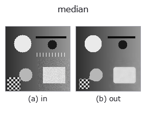

rank op• Data kinds: image → image
• Call: fullseye.apply(img, "median", a=0.5, b=0.5) (2-D model = एक image + दो scalar knobs a,b∈[0,1])
• HALCON समकक्ष: median_image (अर्थ और parameters समझने के लिए HALCON reference उपयोगी है)

*Figure synthetic 128×128 input पर सच में चलाकर मिला output है। बाईं ओर input, दाईं ओर output। Point clouds ऊपर से देखे गए scatter के रूप में (brightness = z), 1-D series line के रूप में, volumes z दिशा में maximum-intensity projection के रूप में, videos बीच के frame के रूप में, complex images amplitude के रूप में, और जो return values चित्र नहीं बन सकते वे स्वयं values के रूप में दिखाए जाते हैं।*
Knob a को बदलकर (0.1 / 0.5 / 0.9, दूसरा knob default पर):
▸ median: knob a को बदलने का figure (docs site)
Knob b को बदलकर (0.1 / 0.5 / 0.9, दूसरा knob default पर):
▸ median: knob b को बदलने का figure (docs site)
दूसरी images पर भी (synthetic scene / photo / coins। ऊपर की row में inputs, नीचे की row में उनके outputs। Knobs default पर):
▸ median: दूसरी images पर output (docs site)
*Colour (H,W,3) input नहीं दिखाया गया: यह op colour channel को तीसरे spatial axis की तरह लेता है (channels को पार करता है)। इसे हर channel के लिए अलग से call करें।*
Median (माध्यिका) filter। HALCON के median_image (Compute a median filter with various masks.) के समकक्ष है।
> नीचे का विस्तृत विवरण मूल text में है — सारांश और headings का अनुवाद हो चुका है।
a が窓サイズを 3,5,7,9（_k(a)）に振る。b が端の扱いを選ぶ: b <= 0.5 で reflect(端画素を複製して折り返す。scipy の既定で、2026-09-17 までの挙動)、以降 nearest / constant(0 で埋める)/ wrap(反対側から巻き取る)。★窓が 3 のときは reflect と nearest が原理的に一致する(はみ出しが 1 画素なので複製先が同じ)—— 端の扱いを変えたのに結果が動かないときは、まず窓の大きさを疑うこと(窓 9 では 3 通りとも変わる)。塩胡椒ノイズなど外れ値に強く、ガウシアン平滑よりエッジを保ちやすい。
Knobs (मापा गया): a चरणों में असर करता है, और बदलाव a ≈ 0.25、0.49、0.75 पर होता है (मापा गया; 0.02 के step वाले sweep से मापी गई स्थिति)।
• gallery2d_smoothing_rank family guide
• Sample data catalog (DL URL / license) — 2-D के लिए skimage.data (BSD/public) + synthetic, 3-D के लिए real data sources (Stanford/PDS आदि) के DL URL।
• Operators का स्रोत और संदर्भ — इस op family के मूल research/methods के स्रोत।
• Algorithm का मानक स्रोत (लेखक, वर्ष) और उपयोग ऊपर की family usage guide में दिए गए हैं।
नीचे का program सच में चलता है, यह जाँचा गया है (figure वाला ही input)। Studio की help में यह block buttons बन जाता है, जिनसे इसे वहीं load करके चलाया जा सकता है।
median 0.50 0.50
▸ यह pipeline load करें · Load करके चलाएँ
• astro_stacking — py -3.11 examples/astro_stacking.py
• blas_thread_budget — py -3.11 examples/blas_thread_budget.py
• ct_reconstruction — py -3.11 examples/ct_reconstruction.py
• gallery2d_smoothing_rank — py -3.11 examples/gallery2d_smoothing_rank.py
• genspark_external_review — py -3.11 examples/genspark_external_review.py
• lightfield_depth — py -3.11 examples/lightfield_depth.py
• photon_timeresolved — py -3.11 examples/photon_timeresolved.py
• piv_flow_from_particles — py -3.11 examples/piv_flow_from_particles.py
• poc_am_thermal_to_ct — py -3.11 examples/poc_am_thermal_to_ct.py
• poc_astro_photometry — py -3.11 examples/poc_astro_photometry.py
• poc_compound_eye — py -3.11 examples/poc_compound_eye.py
• poc_dtof_ranging — py -3.11 examples/poc_dtof_ranging.py
• poc_geodetic_height_frames — py -3.11 examples/poc_geodetic_height_frames.py
• poc_lidar_terrain_change — py -3.11 examples/poc_lidar_terrain_change.py
• poc_nuclei_ploidy — py -3.11 examples/poc_nuclei_ploidy.py
• poc_pv_thermal_survey — py -3.11 examples/poc_pv_thermal_survey.py
• poc_river_surface_velocity — py -3.11 examples/poc_river_surface_velocity.py
• poc_tacscalib_sphere_lut — py -3.11 examples/poc_tacscalib_sphere_lut.py
• poc_web_roll_periodicity — py -3.11 examples/poc_web_roll_periodicity.py
• poc_weld_bead_profile — py -3.11 examples/poc_weld_bead_profile.py
• quickstart — py -3.11 examples/quickstart.py
• specular_photometric — py -3.11 examples/specular_photometric.py
image को input के रूप में लेते हैं)identity · gaussian · mean_box · bilateral · unsharp · min_filter · max_filter · percentile
rank)min_filter · max_filter · percentile · sk_median_disk · cv_median · median_image · median_rect · median_separate
*Provenance: ops.py — 2D operator registry. यह per-op note tools/opdocs.py md से अपने-आप generate होता है (हाथ से edit न करें)।*
© 2026 Kazufumi Furuse — Fullseye operator documentation. Licensed under Apache-2.0.